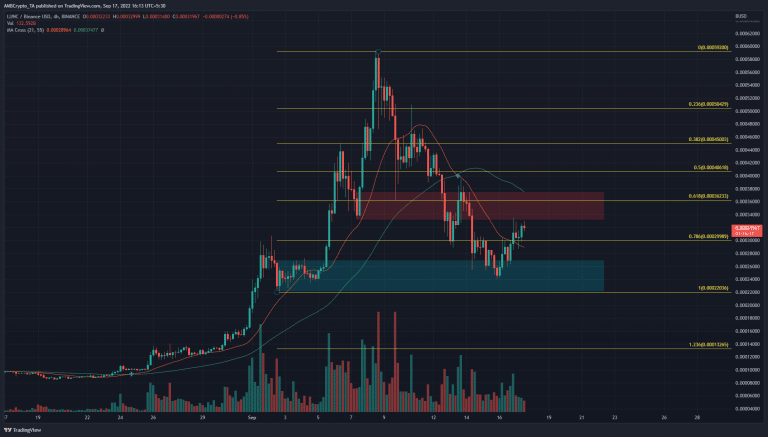

Finance Summary of the Week
5 questions to ask financial advisor before the end of the year, according to an opinion piece
At the conclusion of the year, we should give thanks and spend time with our families during the holidays. Additionally, it's a chance to reflect on the preceding 12 months and ask tour financial advisor some very insightful questions.
1. How do you decide which investments to make ?
We frequently. assess a decision's value based on it's result even when the process itself may be more significant. Throwing darts would need more luck than talent, and any performance above the market would not be replicable over an extended period of time.
Instead, you should be equally corious about the process your advisor used to construct a portfolio as you are about the end product. Do they examine company balance sheets in quest of a certain statistic or do they use macroeconomic data to choose asset classes?
Many investors lost a sizable amount of money in both 2001 and 2008, as a result of their advisor's lack of a repeatable procedure for selecting investments in various economic climates.
Should we take any action to reduce my tax exposure?
You might have missed out on a number of opportunities to cut your taxes, such as harvesting tax losses, contributing to a retirement account, or depreciating rental property. In order to assess whether it makes sense to capture capital gains and offset them against losses, ask your advisor to review the assets and transactions made throughout the year. If you have the chance to enhance your deductions for the upcoming tax year, now would be a good time to prepare some tax strategies for 2023, when there will finally be a break in the activity.
3. What am I spending money on but not using?
Because they are so preoccupied with their assets, I occasionally have to remind customers that I can assist them in other areas of their lives. A financial planner provides estate, long-term care, and education planning in addition to investing your hard-earned money. Utilize all the resources your advisor provides to get the most out of your partnership.
4. Am I on track to achieve my objectives?
It's normal to consider your losses when the market is down, but it might be more valuable to consider how this has affected your capacity to achieve certain objectives. This will help you put the year into perspective, enable you to concentrate on a long-term goal, and perhaps avoid making a snap decision that could erase years of preparation and hard work.
5. Should we make any changes?
Over time, your goals may change, which should affect how your advisor handles your affairs. Did anything happen that changed your life, did you discover a new passion, or did you have a health issue that required a fresh approach?
Clients occasionally decide to put in more time in a job that pays less but is more fulfilling. If you experienced losses in a retirement plan, you should ascertain how it affects your capacity to retire while you still have time to make adjustments. Define the type of life you want to lead, then seek the assistance of your team of advisors to help you get there. Now is the ideal opportunity to determine your advisor's economic response strategy.

LUNC traders can look to trade with the trend as a zone of resistance looms ahead
Terra Classic [LUNC] saw huge volatility on the charts in September. It posted gains of close to 150% in the first week of September. In the following week, the price retraced a good portion of this move upward. What does LUNC hold over the next week?
A set of Fibonacci retracement levels were drawn for LUNC’s skyward surge in September. The 78.6% retracement level at $0.0003 acted as support earlier this week but succumbed to the selling pressure. Over the past day’s trading, this level has once more been flipped to support.
The bullish order block (cyan box) in the $0.00024 region saw a decent reaction in recent days as the price bounced 30% from the lows. However, it fast approached a zone of resistance at the 61.8% retracement level. In the first week of September, a bullish order block formed which saw LUNC rapidly rise from $0.00034 to $0.00059.
This same order block has now been flipped to resistance, and it was likely to act as a seller’s stronghold once again. Therefore, selling opportunity could arise over the next few days if Terra Classic continued to post gains toward $0.00036.
The indicators did not show a bullish picture either. It was true that the H4 Relative Strength Index (RSI) managed to climb back above neutral 50. Yet, in doing so, it formed a hidden bearish divergence. The price has made a lower high while the momentum indicator formed a higher high. This development could see the price react bearishly in the next few days.
The On-Balance Volume (OBV) also rose above a support level from early September, but only barely so. It has been relatively flat over the past week, even though the price saw a sharp decline. This suggested that selling pressure was not as heavy as expected, and recovery was a possibility.
The Chaikin Money Flow (CMF) also stayed in neutral territory over the past week, to once again highlight the lack of significant capital flow into or out of the market.
The price action showed there was a strong possibility of a rejection at $0.00036. The lack of selling volume in the past week suggested a recovery could be possible. Until LUNC can climb past the $0.00036 level and flip it to support, the bias would remain bearish.
This is YouTube Shorts’ best opportunity to surpass TikTok
For the past few years, major social platforms’ attempts to keep up with TikTok’s exploding popularity have felt laughable. To lure creators to its platform, Instagram even offered to pay out huge bonuses for posting viral Reels — in November, one creator told TechCrunch that they had been offered $8,500 for 9.28 million Reels views on Instagram. But users still don’t seem to want a TikTok-like experience from Instagram. Instagram even had to walk back some TikTok-like changes to its app after users (including Kylie Jenner and Kim Kardashian) expressed such deep distaste for them. Instagram head Adam Mosseri said that Instagram lags behind YouTube and TikTok in metrics important to creator satisfaction, a recent report from The Information showed.
Even though Instagram’s parent company Meta has poured a wealth of resources into building out Reels, internal documents leaked to the Wall Street Journal revealed that Instagram users are only spending a total of 17.6 million hours a day with the product. That’s less than ten percent of the time TikTok users spend on the platform, a cumulative 197.8 million hours a day.
Meanwhile, over 1.5 billion logged-in users watch YouTube Shorts each month, but the company hasn’t shared metrics about how engaged these users are. TikTok reached 1 billion monthly active users about a year ago.
If it can pull off this ad revenue share model, YouTube Shorts now has a chance to prove itself as the best way for short form video creators to make a living. Even better, we know that social apps love to copy each other. If YouTube Shorts’ new monetization structure can lure other platforms to figure out their own revenue sharing models ASAP, then we’re in for yet another boom in the creator economy.